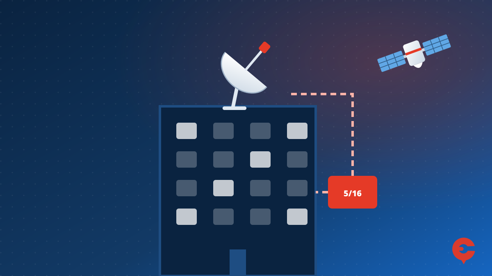
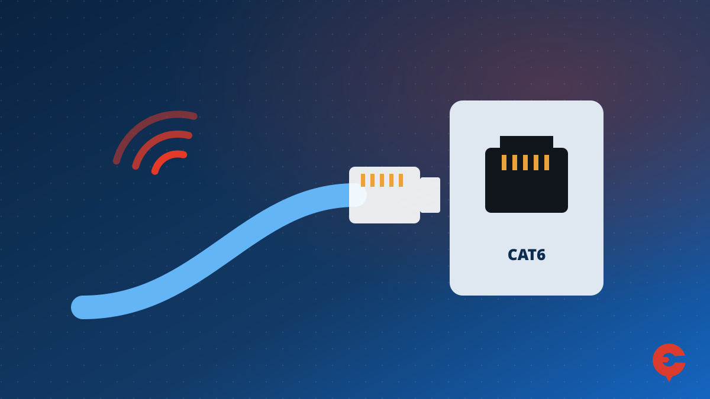
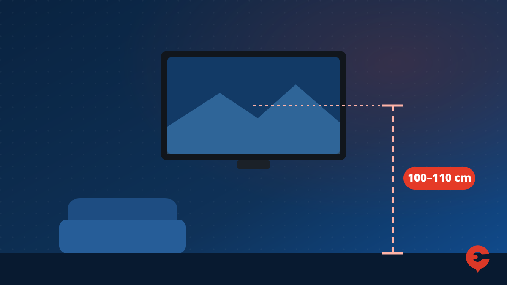
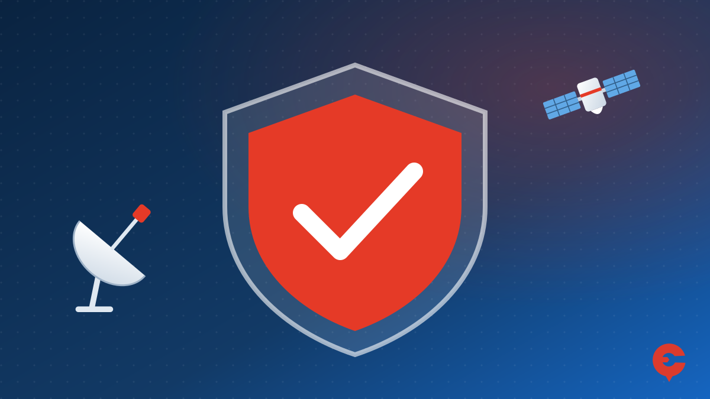

- Bireysel Çanak Anten
- Merkezi Uydu Sistemleri
- İnternet Kablo Çekimi
- Duvara TV Montajı
- Uydu Cihazı Satışı
- Hizmet Sonrası Destek
Bireysel Çanak Anten Arıza ve Kurulum Hizmetleri.
Bireysel çanak anten hizmetlerimiz, kullanıcıların uydu üzerinden yüksek kaliteli TV yayınlarına kesintisiz erişim sağlamalarına yönelik çözümler sunar. Profesyonel ekibimiz, ihtiyacınıza en uygun çanak anten sistemini belirleyerek, sorunsuz ve güvenilir bir kurulum gerçekleştirir. Bu hizmet, evlerde tekil kullanıcılar için idealdir.
Neler Sunuyoruz?
- Çanak Anten Kurulumu:Ev, villa veya müstakil alanlarda kişisel çanak anten montajı.
- Farklı Uydu Kurulumu:Türkiye’de en sık kullanılan uydu olan Türksat başta olmak üzere, Hotbird, Astra ve diğer uydu sinyallerine ait kurulum.
- Uydu Sinyali Ayarı:Yüksek sinyal kalitesi ve net bir yayın için profesyonel sinyal ayarı yapıyoruz.
- LNB Montajı ve Ayarları:2'li,4'lü, 8'li LNB seçenekleri ile birden fazla odaya kablo çekme işlemleri yapıyoruz.
- Anten Bakım ve Onarımı:Zamanla sinyal kaybı veya yön bozulması yaşanabilecek antenlerin bakım ve onarım hizmetleri.
Neden Bizi Tercih Etmelisiniz?
•Deneyimli Kadro: Alanında uzman ve deneyimli teknisyenlerimizle hızlı ve güvenilir çözümler sunuyoruz.
•Kaliteli Ekipman: En iyi sinyal kalitesini sağlayan, dayanıklı ve uzun ömürlü çanak anten ve LNB sistemleri kullanıyoruz.
•Uygun Fiyatlar: Rekabetçi fiyatlarla kaliteli hizmet sunmayı taahhüt ediyoruz.
•Garantili Hizmet: Yaptığımız tüm işlemler, garantimiz altındadır. Kurulum sonrası teknik destek hizmetimizle her zaman yanınızdayız.
İşi bilene yaptırın pişman olmayın...
Yaptığımız işin daima arkasındayız...

Merkezi Uydu Sistemleri
Merkezi uydu sistemleri, apartmanlar, siteler, iş merkezleri ve toplu yaşam alanları gibi birden fazla kullanıcının bulunduğu yerlerde, tek bir çanak antenle uydu sinyallerinin tüm dairelere dağıtılmasını sağlayan çözümlerdir. Bu sistem sayesinde her daireye ayrı ayrı anten kurulumuna gerek kalmaz, estetik ve maliyet açısından avantaj sağlar.
Neler Sunuyoruz?
- •Merkezi Uydu Sistemi Kurulumu: Tek bir uydu anteni üzerinden tüm dairelerin veya ofislerin uydu yayınlarına erişimini sağlamak için merkezi sistem kurulumu.
- •Quadro LNB ve Multiswitch Sistemleri: Birden fazla uydudan sinyal almak için multiswitch ve LNB çözümleri.
- •Kablolama ve Sinyal Dağıtımı: Profesyonel kablolama ve sinyal dağıtım sistemi ile her dairenin net ve güçlü bir sinyal almasını sağlıyoruz.
- •Yüksek Kalite Ekipman: Sinyal gücünün uzun mesafelerde bile kaybolmaması için yüksek kaliteli ve dayanıklı ekipmanlar kullanıyoruz.
- •Sistem Bakım ve Onarımı: Merkezi uydu sistemlerinde meydana gelebilecek arızalar ve sinyal sorunları için hızlı ve etkili bakım ve onarım hizmetleri.
Merkezi Uydu Sistemlerinin Avantajları
- •Estetik Görünüm: Bina üzerinde çok sayıda çanak anten yerine tek bir çanak anten kullanılarak daha temiz ve estetik bir görünüm sağlanır.
- •Maliyet Avantajı: Merkezi sistemler, her daireye ayrı bir çanak kurulum maliyetini ortadan kaldırarak toplu çözüm sunar.
- •Yüksek Performans: Merkezi uydu sistemleri, profesyonelce tasarlanıp uygulandığında, her daireye yüksek kalitede sinyal sağlar. Sinyal gücünde kayıp yaşanmadan tüm kullanıcılar aynı kalitede yayın izleyebilir.
- •Kolay Bakım ve Yönetim: Merkezi sistemler, bakım ve onarım işlemlerinin daha hızlı ve kolay yapılmasına olanak tanır. Tek bir noktada kontrol sağlanarak tüm daireler için çözüm üretilebilir.
Nerelerde Kullanılabilir?
- •Apartmanlar ve Siteler: Birden fazla daireye sahip apartmanlar ve büyük site yerleşimlerinde.
- •İş Merkezleri: Ofislerin bulunduğu binalarda uydu yayınlarına merkezi erişim.
- •Oteller: Her odaya uydu yayını sunmak isteyen otel ve tatil köylerinde.
- •Hastaneler: Hastane ve sağlık merkezlerinde farklı alanlarda TV izlenebilirliği sağlamak için.
Neden Bizi Tercih Etmelisiniz?
- Uzman Ekip: Alanında uzman kadromuzla hızlı ve verimli çözümler sunuyoruz.
- •Dayanıklı Ekipman: Uzun yıllar sorunsuz çalışacak, kaliteli ekipmanlar kullanıyoruz.
- •Hızlı Destek: Kurulum sonrası teknik destek ve bakım hizmetleriyle her zaman yanınızdayız.
- •Garantili Hizmet: Tüm kurulum ve bakım işlemlerimiz garantilidir. Sisteminizde meydana gelebilecek sorunlarda hızlı müdahale sunuyoruz.

Merkezi Sistem Çanak Anteni kurmak tecrübe ve beceri ister.
Merkezi Uydu Sistemleri Arıza ve Kurulum işlerinizi Çankaya Uydu güvencesiyle yaptırabilirsiniz.
İnternet Kablo Çekimi
İnternet, modern hayatın vazgeçilmez bir parçası haline gelmiştir. İletişim, eğitim, iş hayatı ve eğlence gibi birçok alanda devrim yaratmıştır. Bilgiye anında erişim, dünyanın dört bir yanından insanlarla iletişim kurma ve uzaktan çalışma gibi imkanlar sunarak günlük yaşamımızı kolaylaştırır. Ayrıca, alışverişten bankacılığa kadar pek çok hizmeti hızlı ve pratik hale getirir. İnternet, bireyleri ve toplumları birbirine bağlayarak dünyayı daha küçük ve erişilebilir bir yer haline getirmiştir. Bu nedenle, internet hayatımızda vazgeçilmez bir role sahiptir.
Bina girişindeki Krone kutusundan daire içerisine telefon kabloları çekilerek evinizde internet kullanabilirsiniz.Çekilen kablolar ne kadar kaliteli olursa o kadar iyi internete sahip olursunuz.
Bizler sizlere en iyi hizmeti vermek için Krone kutusundan daire içerisine UTP CAT6 kablo çekerek gelen sinyaldeki düşüşü minimum seviyeye indiriyoruz.
Kaliteli malzemeler ve Profesyonel işçilik ile internet kablo işlerinizi yapabiliriz.

Duvara TV Montajı
Duvara televizyon montajı, hem estetik bir görünüm sağlar hem de yer tasarrufu sunar. Montaj işleminde, uygun bir duvar tipi ve güçlü montaj aparatları seçmek önemlidir. İlk olarak, televizyonun boyutuna ve ağırlığına uygun bir duvar montaj aparatı temin edilmelidir. Ardından, duvarın arkasında elektrik ve diğer tesisat hatları olup olmadığı kontrol edilir. Montaj yapılacak alan belirlenip vidalar duvara sabitlenir ve televizyon güvenli bir şekilde asılır. Son olarak, kablolar düzgün bir şekilde gizlenerek, temiz ve düzenli bir görüntü elde edilir.
- Her Televizyonun Boyutuna Göre Askı Aparatları Vardır.
- Duvar Türüne Göre Montaj Vidalaması Yapılması Gerekir.
- Su Terazisi Kullanarak Televizyonu Tam Dengesinde kurulması çok çok önemlidir.
- Kablo Kanalı kullanılarak Şık ve Estetik bir Görüntü Göz Zevki İçin Önemlidir.

Doğru yükseklik, VESA ölçüsü ve duvar tipine göre aparat seçimi için TV duvar montajı rehberimize göz atabilirsiniz.
Televizyon Montajı estetik ve dikkat gerektiren bir iştir, Televizyon montaj işlerinizi Şık ve Estetik bir şekilde yapabiliriz.
Uydu Cihazı Satışı
Next v.b Markaların TKGS uyumlu Uydu Cihazları ve Android Cihazların Satışını Yapmaktayız.
- TKGS Uyumlu HD Çözünürlüklü Uydu Alıcısı
- TKGS Uyumlu 4K Çözünürlüklü Uydu Alıcısı
- HD Çözünürlüklü Android Box (TV'yi Smart haline getirir ve tüm uygulamaları kullanabilirsiniz)
- 4K Çözünürlüklü Android Box (TV'yi Smart haline getirir ve tüm uygulamaları kullanabilirsiniz)


Kaliteli ve TKGS Özellikli Uydu Alıcıları ile kesintisiz yayın izleyebilirsiniz.
Hizmet Sonrası Destek
Müşterinin evine yapılan tüm servis hizmetlerimiz, işçilik ve parça değişimlerini kapsayacak şekilde 1 ay garanti altındadır. Bu süre zarfında, aynı problemle karşılaşılması durumunda ücretsiz olarak destek sağlanacaktır. Müşteri memnuniyeti bizim önceliğimizdir.
- İşçilik 1 Ay Garantili
- Dış Kurulumdaki Malzemeler 2 Ay Garantili (LNB, Kablo, Çanak Anten)
- Uydu Alıcıları ve Android Box Cihazları 2 Yıl Garantilidir.
Yaptığımız işin daima arkasındayız...
